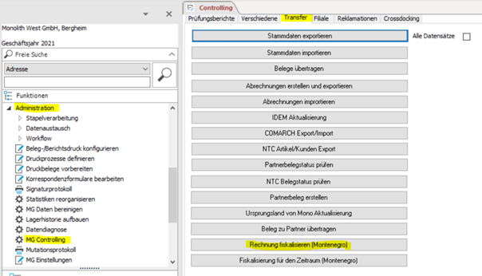
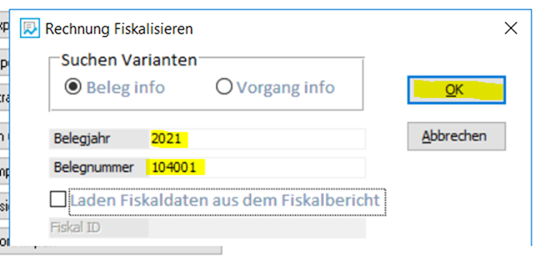
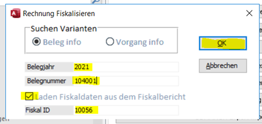
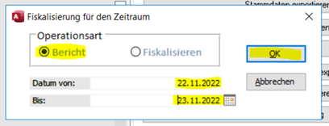
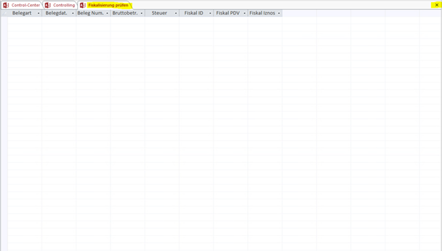
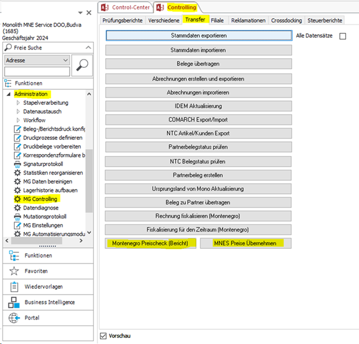

Проекты Sage
Проект "Фискализация" (Fiskalisierung)
👨🏻💻 разработчик - Maksim Andreev
Важные моменты в проведении фискализации документов в Sage
- Фискализация в Sage происходит автоматически после создания каждого документа типа Rechnung, Gutschrift, Stornorechnung.
- Признак успешной фискализации - наличие QR кода на документе.
- Обязательные условия для проведения фискализации:
– наличие PIB клиента в соответствующем поле Sage для клиентов из Montenegro (для иностранных клиентов в данном поле должен быть указан уникальный ID клиента)
– документ типа Gutschrift или Stornorechnung должен быть связан в Sage с оригинальным документом
– дата документа должна быть раньше или равна текущей системной дате - Если фискализация не прошла автоматически, необходимо запустить этот процесс «вручную»
(см. Инструкцию ниже). - Запрещается вносить изменения в фискальный документ после того, как он был фискализирован.
- Фискальные суммы документа могут отличаться от сумм документов в Sage на несколько центов за счет разницы в округлении. С целью контроля отличия суммы налога в документе и его фискальных реквизитах в отчетах Sage предусмотрено поле «FiskalSaldo».
Дополнения, внесенные в интерфейс Sage для работы с фискализацией счетов
- В меню Stammdaten->Adressen на закладке Info добовлено поле PIB, заполнение которого является ОБЯЗАТЕЛЬНЫМ для успешного проведения фискализации документов по данному клиенту (для иностранных клиентов в это поле вносится их уникальный ID).

-
В меню Administration->Controlling на закладке Transfer добовлена кнопка Rechnung Fiskalisieren (Montenegro) для проведения фискализации вручную, если автоматическая фискализация по какой-либо причине не сработала.

После нажатия кнопки Rechnung Fiskalisieren (Montenegro) открывается окно Rechnung FiskalisierenВариант 1: фискализация документа, который отсутствует в отчетах о фискализации:

Для фискализации «вручную» необходимо ввести данные фискализируемого документа и нажать «ОК». Будет запущена процедура фискализации документа.Вариант 2: фискализация документа, информация о котором присутствует в отчетах о фискализации:

Дополнительно поставить галочку Laden Fiskaldaten aus dem Fiskalbericht и указать "Fiskal ID" документа из отчета по фискализации (такая ситуация будет встречаться крайне редко, только в случаях, если фискальные данные сохранились на стороне налоговой службы, но не записались в базу данных Sage). -
Формирование отчета по фискализации
В меню Administration->Controlling на закладке Transfer добовлена кнопка Fiskalisierung für den Zeitraum для просмотра отчетов и проведения фискализации вручную за период времени.

Для формирования отчета по фискализации необходимо указать период времени и нажать ОК
 - В случае ошибки сначала откроется окно «Fiskalisierung prüfen». Если ошибок нет, то сразу открывается отчет (пункт 5)

После двойного щелчка мышью на поле с ошибкой (красного цвета) откроется соответствующее окно для проведения фискализации «вручную». Достаточно просто нажать «Ок»


В итоге окно «Fiskalisierung prüfen» должно стать пустым. После этого окно можно закрыть
 - После закрытия окна «Fiskalisierung prüfen» откроется отчет в формате Excel.
Отчет формируется в виде двух файлов: «SageFiskalReport» (все документы Sage за указанный период, которые требуют фискализации, с указанием фискальных данных при наличии) и «FiskalReport» (все фискальные документы, сохраненные в базе данных налоговой службы за указанный период, с указанием реквизитов соответствующих документов из Sage). В обоих отчетах поля Belegnummer и FiskalID не должны быть пустыми.


-
Fiskalisierung für den Zeitraum можно также использовать для проведения фискализации «вручную» всех нефискализированных документов за указанный период времени. Для этого нужно выбрать вид операции Fiskalisieren и нажать OK:

При этом будут профискализированы все дукументы, подлежащие фискализации, по которым в Sage отсутствуют фискальные данные. -
Для Montenegro добавлены фискальные данные в печатных формах Sage (последняя страница фискального документа):


Проект "Проверка цен" (Preischeck)
👨🏻💻 разработчик - Maksim Andreev
Отчет для подразделений Montenegro, который отображает расхождения между ценами MNES в сравнении с другими подразделениями Montenegro (MNE, MNEI, MNED, MNEL).
Сравнение производится только по активным артикулам MNES.
Отчет формируется ежесуточно в ночное время.
В случае выявления расхождений в ценах отчет отправляется на согласованные с Заказчиком адреса электронной почты:
racunovodstvo@monolith-gruppe.com;
d.kisler@monolith-gruppe.com;
v.artemyeva@monolith-gruppe.com;
v.artemyev@monolith-gruppe.com;
a.frank@monolith-gruppe.com.
Пример отчета:

Для возможности запуска проверки вручную в разделе "Transfer" меню Sage "Administration-->MG Controlling" добавлены кнопки:
- Montenegro Preischeck (Bericht) - проверить корректность цен;
- MNES Preise Übernehmen - передать исправленные цены от MNES другим подразделениям Montenegro
ВАЖНО: процедуру возможно запустить только от имени подразделения MNE Service. 